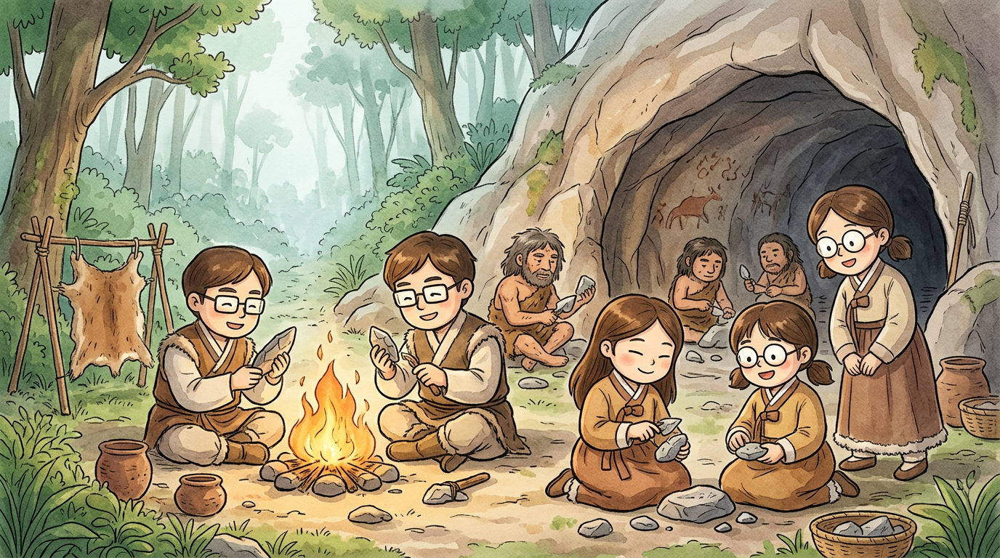
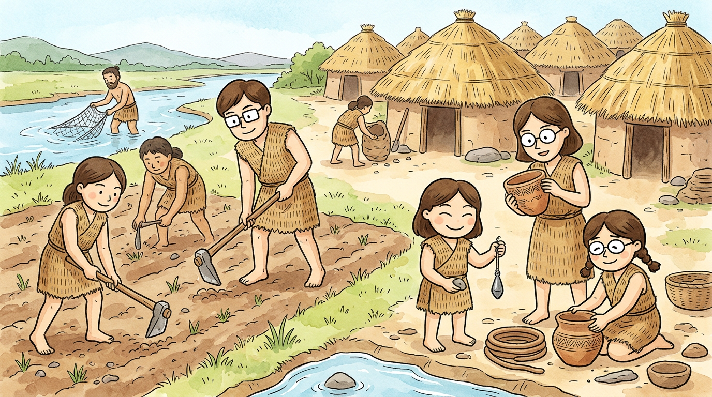
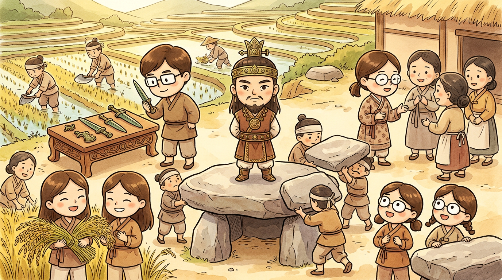
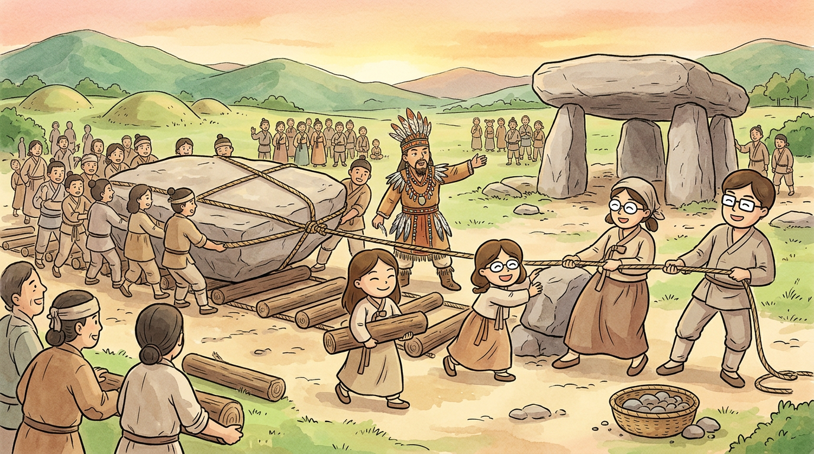

1. 선사시대
돌멩이가 도구라고? 우리 조상들의 놀라운 지혜
구석기 시대 (약 70만 년 전 ~)
아주 아주 옛날, 지금으로부터 약 70만 년 전부터 한반도에 사람이 살기 시작했어. 이 시대를 구석기 시대라고 해. '구석기'는 '옛날 돌 도구'라는 뜻이야.

구석기 시대의 생활 모습
구석기 시대 사람들은 돌을 깨뜨려서 만든 뗀석기를 사용했어. 대표적인 도구가 주먹도끼야. 주먹에 딱 쥘 수 있는 크기로, 동물의 가죽을 벗기거나 나무를 자르는 데 썼지.
이 시대 사람들은 주로 동굴이나 바위 그늘에서 살았어. 겨울에는 추위를 막기 위해 동물 가죽으로 옷을 만들어 입었지. 불을 사용할 줄 알아서 음식을 익혀 먹고, 맹수를 쫓아내기도 했어.
먹을 것은 주로 사냥과 채집으로 구했어. 남자들은 무리를 지어 사슴, 멧돼지 같은 동물을 사냥하고, 여자와 아이들은 열매, 뿌리, 나물 같은 것을 모았어. 한곳에 오래 머물지 않고 먹을 것을 찾아 이동 생활을 했단다.
용어 정리
- 뗀석기
- 돌을 깨뜨려 만든 도구 (구석기 시대)
- 주먹도끼
- 손에 쥐고 쓰는 만능 도구
- 채집
- 열매, 뿌리 등을 모으는 것
한반도에서 발견된 가장 오래된 구석기 유적지는 경기도 연천 전곡리야! 1978년에 미군 병사가 한탄강변에서 주먹도끼를 발견했는데, 이것이 동아시아 최초의 아슐리안형 주먹도끼로 밝혀져 세계 고고학계를 깜짝 놀라게 했어.
신석기 시대 (약 1만 년 전 ~)
빙하기가 끝나고 날씨가 따뜻해지면서 사람들의 생활이 크게 바뀌었어. 이제 돌을 갈아서 만든 간석기를 사용하기 시작했지. 이 시대를 신석기 시대라고 해.

신석기 시대의 마을 풍경
신석기 시대의 가장 큰 변화는 바로 농사의 시작이야! 조, 피, 수수 같은 곡식을 심어 키우기 시작했어. 농사를 짓게 되면서 한곳에 머물러 사는 정착 생활을 시작했지.
강가나 바닷가에 움집(땅을 파고 지붕을 얹은 집)을 짓고 마을을 이루어 살았어. 곡식을 저장하고 음식을 담기 위해 토기를 만들었는데, 이 시대의 대표적인 토기가 바로 빗살무늬 토기야!
빗살무늬 토기는 뾰족한 바닥에 빗살 같은 무늬가 새겨져 있어. 바닥이 뾰족한 이유는 모래나 흙에 꽂아 세우기 위해서였어. 또 낚시를 하고, 그물로 물고기를 잡고, 조개를 모아 먹었어. 조개를 먹고 남은 껍데기가 쌓인 것을 조개더미(패총)라고 해.
생각해 보기
농사를 짓기 시작한 것이 왜 인류 역사에서 가장 중요한 변화 중 하나일까? 힌트: 정착 생활, 인구 증가, 직업의 분화와 관련이 있어!
청동기 시대 (약 기원전 2000년 ~)
청동(구리+주석 합금)으로 만든 도구를 사용하기 시작한 시대야. 하지만 청동은 귀하고 비쌌기 때문에 주로 무기(비파형 동검)와 의식 도구(청동 거울)에 사용했어. 일반 농사 도구는 여전히 돌로 만들었어.

청동기 시대의 마을과 계급 사회
청동기 시대의 가장 큰 변화는 벼농사의 시작이야! 벼를 수확할 때 사용한 도구가 바로 반달 돌칼이야. 반달 모양으로 생긴 돌칼에 구멍 두 개를 뚫어 끈을 꿰고, 손에 쥐고 벼 이삭을 따냈어.
농사 기술이 발전하면서 곡식이 많이 생산되었고, 이것을 많이 가진 사람과 적게 가진 사람이 나뉘면서 빈부 격차가 생겼어. 힘이 센 사람이 우두머리(족장)가 되어 다른 사람들을 다스리기 시작했지. 이것이 바로 계급의 탄생이야!
고인돌 이야기
청동기 시대의 대표적인 유적이 바로 고인돌(돌멘)이야. 고인돌은 거대한 돌을 이용해 만든 무덤인데, 윗돌의 무게가 수십 톤에 달하기도 해! 이렇게 큰 돌을 옮기려면 수백 명의 사람이 필요했을 거야.
그래서 고인돌은 단순한 무덤이 아니라 "나는 이렇게 많은 사람을 동원할 수 있는 힘 있는 사람이다!"라는 것을 보여주는 권력의 상징이기도 했어.

고인돌 건설 장면
전 세계 고인돌의 약 40%가 한반도에 있어! 특히 고창, 화순, 강화의 고인돌은 2000년에 유네스코 세계유산으로 등재되었어. 고창에만 약 447기의 고인돌이 모여 있단다.
용어 정리
- 간석기
- 돌을 갈아서 만든 도구 (신석기 시대)
- 빗살무늬 토기
- 신석기 시대의 대표 토기, 뾰족한 바닥
- 반달 돌칼
- 벼 이삭을 따는 반달 모양 돌 도구
- 비파형 동검
- 비파(악기) 모양의 청동 칼, 고조선의 세력 범위를 알려줌
- 고인돌
- 청동기 시대의 거대한 돌무덤, 지배자의 권력 상징
한반도 고인돌 분포
전 세계 고인돌의 40%가 한반도에!

한반도 고인돌 분포도 (출처: Wikimedia Commons)
고인돌 종류
- 탁자식 (북방식): 받침돌 위에 덮개돌을 올린 형태. 주로 한반도 북부
- 바둑판식 (남방식): 땅속에 받침돌을 묻고 덮개돌을 올림. 주로 남부
- 개석식: 받침돌 없이 덮개돌만 올린 형태
선사시대 퀴즈 (10문제)
Q1. 구석기 시대 사람들이 사용한 도구는?
Q2. 구석기 시대 사람들의 생활 방식은?
Q3. 신석기 시대의 대표적인 토기는?
Q4. 신석기 시대에 시작된 가장 큰 변화는?
Q5. 청동기 시대에 벼를 수확하는 데 사용한 도구는?
Q6. 고인돌은 어떤 시대의 유적일까?
Q7. 한국의 고인돌이 세계유산으로 등재된 지역이 아닌 곳은?
Q8. 신석기 시대 사람들이 살았던 집의 형태는?
Q9. 청동기 시대에 나타난 사회 변화는?
Q10. 전 세계 고인돌의 약 몇 %가 한반도에 있을까?
깊이 생각해보기
벼농사가 시작되면서 왜 '전쟁'이 더 자주 일어나게 되었을까?
농사를 짓게 되면서 사람들은 땅, 물, 수확물 같은 '재산'을 갖게 되었어요. 이전에는 먹을 것을 찾아 이동했기 때문에 땅을 두고 싸울 이유가 없었지만, 농사를 지으면서 '내 땅'이라는 개념이 생기고, 더 좋은 땅과 더 많은 식량을 차지하려는 다툼이 시작된 거예요. 또한 식량이 남으면서 인구가 늘어나고, 큰 마을과 작은 마을 사이에 힘의 차이가 생겨 강한 쪽이 약한 쪽을 공격하게 되었답니다.
불을 발견하기 전과 후, 사람들의 '밤'은 어떻게 달라졌을까?
불이 없던 시절, 밤은 무서운 시간이었어요. 어둠 속에서 맹수가 다가와도 볼 수 없었고, 추운 겨울에는 체온을 유지하기도 힘들었죠. 불을 발견한 후에는 밤에도 활동할 수 있게 되었어요. 불빛 아래서 도구를 만들거나 이야기를 나눌 수 있었고, 불이 맹수를 쫓아주어 안전해졌어요. 음식을 익혀 먹게 되면서 질병도 줄고 소화도 잘 되었답니다. 불은 '문명의 시작'이라고 할 수 있어요.
고인돌을 만드는 데 수백 명이 필요했다면, 그 시대에 이미 '리더'가 있었다는 뜻일까?
맞아요! 수백 명이 함께 무거운 돌을 옮기고 쌓으려면, 누군가가 계획을 세우고 일을 나누어 지시해야 해요. 또한 그 많은 사람들에게 밥을 먹여야 하니 식량을 관리하는 사람도 필요했을 거예요. 이것은 이미 '지배자(족장)'와 '피지배자'가 구분되는 계급 사회가 시작되었다는 증거랍니다. 고인돌의 크기가 클수록 그 지도자의 힘이 컸다고 볼 수 있어요.